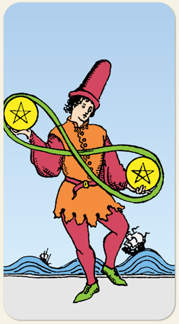

O equilíbrio das prioridades, a adaptabilidade e a gestão das flutuações materiais. A habilidade de lidar com múltiplas responsabilidades ou recursos ao mesmo tempo, nos dizendo que a mudança é a única constante. A flexibilidade, o dinamismo, o movimento necessário para manter a estabilidade, o malabarismo entre diferentes áreas da vida prática.
Oposição e matéria, ou seja, matéria e antimatéria, o malabarismo de recursos, de resolver as coisas com aquilo que se tem, oscilações entre ter e não ter, a importância de saber administrar o tempo de escassez e o tempo de abundância, respeitar o ciclo de plantio e colheita, o barco que vai descendo e subindo conforme as ondas.
Positivo: Ser capaz de se virar nos trinta, alocar bem os recursos. O Naipe de Ouros é empreendedor, buscar otimizar o trabalho e gerar eficiência. Cada um fazendo sua parte, divisão de tarefas.
Negativo: Um cobertor que, quando cobre a cabeça descobre os pés. Ter menos do que o necessário para fazer algo, dinheiro guardado em um saco furado, recursos que escorregam por entre os dedos, não saber administrar recursos.
Símbolos: Homem, Leminiscata, Mar Agitado, Navio, Ondas.
Cores: Vermelho, Laranjado, Amarelo, Verde, Azul, Cinza.